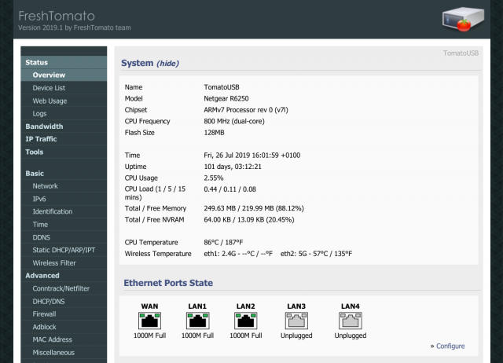

The security of ISP's standard routers has been a nagging concern of mine for some time. Security updates seem to be few and far between and there are disturbing reports of exploits in the wild. Also the functionality of these boxes is quite limited; none or limited support for local DNS, VPN and DDNS. Some third party routers add this functionality, but security is still a concern. Initially well supported, manafuacturers seem to consider a router obsolete a couple of years after launch, and the trickle of updates dwindles and dries up.
I decided to put our ISPs hub in modem only mode and switch to a custom router firmware, FreshTomato. For this I purchased a Netgear R6250. The Tomato developers continue to support their firmware on a range of routers long after the manufacturer has lost interest.
The updates keep on coming and now I'm able to use OpenVPN to connect to my home network using a DDNS address. The various web servers and docker containers on my LAN are assigned local DNS names using dnsmasq.
